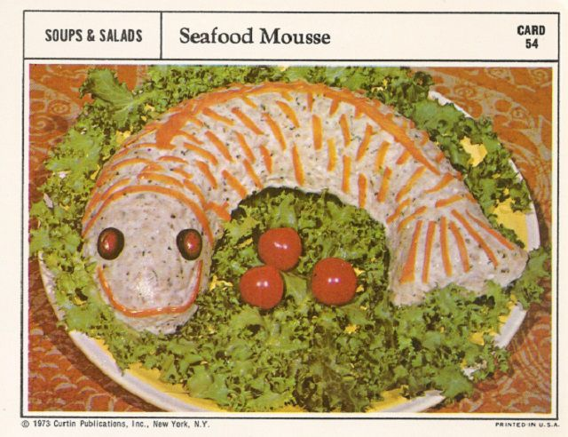

I know what your thinking, but git it a shot.

This is a must try seafood dish. The best part is it doesnt even have to contain any actual fish!
Ingredients
- 1 lb of absolutely any type of meat. Any... Type... At all...
- 1 head of lettuce
- A couple cherry tomatos
- Ketchup
Directions
- Blend up the meat of your choice inside of a blender.
- Form the mean into a fish-shaped abomonation in an oven-safe dish.
- Bake for 30 minutes at 450 degrees.
- While meat is cooking, finely chop lettuce and make a nice bed of lettuce on a plate for our creapy fish meat ball to rest on.
- Once fish is cooked and plated, garnish with random cherry tomatos
- Enjoy while blindfolded!
Back to top
Back to home